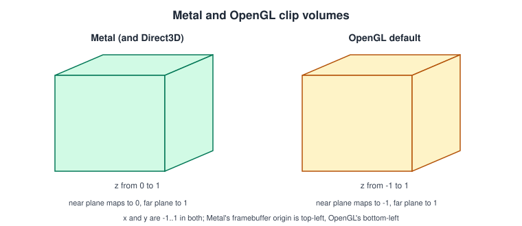
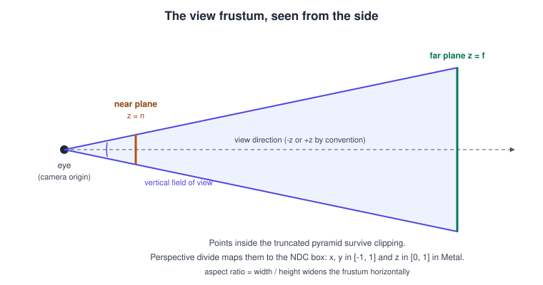
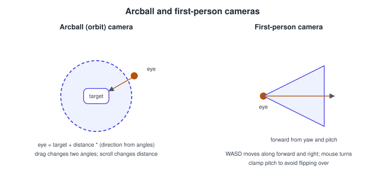

Transforms and Camera
|
This content was generated with the assistance of AI and should be verified against the official documentation before being relied on in production. |
A vertex enters the pipeline in the model’s own coordinates and has to leave it in clip space, ready for the rasteriser. Three
matrices do that job: the model matrix places the object in the world, the view matrix places the world in front of the camera,
and the projection matrix squeezes the camera’s view volume into the box the GPU clips against. This page builds those three with
the simd types, explains Metal’s conventions (column-major matrices, depth from 0 to 1, a top-left framebuffer origin), and ends
with two camera controllers and the way the results reach the shader.
The facts were checked in November 2026. The code is Swift for Xcode 27 and Metal Shading Language 4.1; the matrix mathematics is the same on every Metal version, and the binding code is shown for Metal 4 (26 operating systems and later) and the Metal 3 API it can coexist with. It runs on iOS, iPadOS, macOS, tvOS and visionOS. In the Metal Bookshelf running example this page turns the textured quad of Textures and Samplers into a rotating book seen by a camera. The coordinate spaces are explained in general terms in Coordinate Spaces and Transforms and Vectors, Matrices and Homogeneous Coordinates; the basics of the simd types and the NDC convention are in Math for 3D with simd. The OpenGL equivalent is Cameras and Projection.
The chain of spaces
\[ \mathbf{ p }_{ clip } = P \, V \, M \, \mathbf{ p }_{ model } \]
| Matrix | Maps from | To | Built from |
|---|---|---|---|
Model, \( M \) |
model (object) space |
world space |
Translation, rotation and scale of the object; one per object, changes when it moves. |
View, \( V \) |
world space |
view (camera, eye) space |
The inverse of the camera’s own placement; one per camera, changes when the camera moves. |
Projection, \( P \) |
view space |
clip space |
Field of view, aspect ratio, near and far planes; changes on resize or zoom. |
After the vertex function returns the clip-space position, the hardware clips against \( -w \le x, y \le w \) and \( 0 \le z \le w \), divides by \( w \) to reach normalised device coordinates (NDC), and the viewport transform converts NDC to pixels. The vertex shader multiplies on the left (matrix times column vector), so the product is written right to left.
Metal conventions that differ from other APIs

-
Depth runs from 0 to 1 in NDC. A projection matrix written for OpenGL (depth -1 to 1) produces a visible volume twice as deep as intended in the 0..1 range: OpenGL maps the near plane to -1, which Metal clips, so everything in the nearer part of the volume disappears. Use a projection built for the 0..1 range, as below.
-
Matrices are column-major.
simd_float4x4stores four column vectors;m.columns.3is the translation. MSLfloat4x4has the same layout, so a Swift matrix can be copied into a shader uniform with no transposition. -
The framebuffer origin is the top left, NDC y points up, and texture coordinates (0, 0) are the top-left texel. A flip of the image is not needed for textures loaded by
MTKTextureLoaderwith the right option (see the textures page). -
Winding. The default front face is clockwise; set
setFrontFacing(.counterClockwise)for models authored counter-clockwise. -
Handedness is your choice. Metal imposes none. This page uses a right-handed view space looking down \(-z\), as glTF and most asset pipelines do, so the shared
bookshelf.glbshelf does not need mirroring; the matrices below encode that.
Matrix helpers with simd
import simd
extension float4x4 {
static func translation(_ t: SIMD3<Float>) -> float4x4 {
var m = matrix_identity_float4x4
m.columns.3 = SIMD4(t, 1)
return m
}
static func scale(_ s: SIMD3<Float>) -> float4x4 {
float4x4(diagonal: SIMD4(s, 1))
}
/// Rotation of `angle` radians around a normalised axis, via a quaternion.
static func rotation(angle: Float, axis: SIMD3<Float>) -> float4x4 {
float4x4(simd_quatf(angle: angle, axis: simd_normalize(axis)))
}
/// Right-handed look-at: the camera looks from `eye` towards `center`, along -z of view space.
static func lookAt(eye: SIMD3<Float>, center: SIMD3<Float>, up: SIMD3<Float>) -> float4x4 {
let z = simd_normalize(eye - center) // points backwards, out of the screen
let x = simd_normalize(simd_cross(up, z)) // right
let y = simd_cross(z, x) // up, already unit length
return float4x4(columns: (
SIMD4(x.x, y.x, z.x, 0),
SIMD4(x.y, y.y, z.y, 0),
SIMD4(x.z, y.z, z.z, 0),
SIMD4(-simd_dot(x, eye), -simd_dot(y, eye), -simd_dot(z, eye), 1)))
}
}float4x4(simd_quatf) builds a rotation matrix from a quaternion, which avoids the gimbal lock of stacked Euler angles; see
Rotations and Quaternions. The usual composition is
\( M = T \, R \, S \): scale first (rightmost), then rotate, then translate.
Perspective projection and the frustum

A perspective camera sees a truncated pyramid, the frustum, bounded by the near plane, the far plane and four side planes. Its shape comes from four numbers:
| Parameter | Meaning | Typical value |
|---|---|---|
Vertical field of view, \( \theta \) |
The angle between the top and bottom planes. Larger values widen the view and exaggerate perspective. |
45 to 70 degrees for a game, 90 to 100 for first-person, per device for visionOS (the system supplies it). |
Aspect ratio |
Drawable width divided by height. Without it the image is stretched. |
|
Near distance \( n \) |
Closest visible distance; must be greater than 0. |
0.1 for a scene measured in metres. |
Far distance \( f \) |
Farthest visible distance. |
100 for a room, 1000 for a landscape. |
extension float4x4 {
/// Right-handed perspective for Metal: view space looks down -z, clip depth is 0...1.
static func perspective(fovY: Float, aspect: Float, near: Float, far: Float) -> float4x4 {
let f = 1 / tan(fovY / 2)
let range = near - far
return float4x4(columns: (
SIMD4(f / aspect, 0, 0, 0),
SIMD4(0, f, 0, 0),
SIMD4(0, 0, far / range, -1),
SIMD4(0, 0, near * far / range, 0)))
}
/// Right-handed orthographic for Metal, clip depth 0...1.
static func orthographic(left: Float, right: Float, bottom: Float, top: Float,
near: Float, far: Float) -> float4x4 {
let w = right - left, h = top - bottom, range = near - far
return float4x4(columns: (
SIMD4(2 / w, 0, 0, 0),
SIMD4(0, 2 / h, 0, 0),
SIMD4(0, 0, 1 / range, 0),
SIMD4(-(right + left) / w, -(top + bottom) / h, near / range, 1)))
}
}Source: Drawing a triangle with Metal 4
Checking the depth row of perspective: a point at \( z = -n \) gives \( z_{ clip } = 0 \) and \( w = n \), so NDC depth is 0; a point
at \( z = -f \) gives \( z_{ clip } = f \) and \( w = f \), so NDC depth is 1. An orthographic projection has no divide: parallel
lines stay parallel, size does not change with distance, and it is the choice for 2D, UI, CAD views and directional shadow maps
(see Shadows).
Precision of the depth buffer
Perspective depth is not linear: most of the precision sits near the near plane. With a near plane of 0.01 and a far plane of 1000, distant surfaces fight (z-fighting). Remedies, in order of effect:
-
Move the near plane out as far as the scene allows; it matters much more than the far plane.
-
Use a
.depth32Floatformat instead of a 16-bit one. -
Use reversed-Z: swap near and far in the matrix, clear the depth to 0 and use the
.greatercompare function. With a floating-point depth buffer the distribution of precision matches the hyperbolic curve and the error nearly vanishes.
extension float4x4 {
/// Reversed-Z perspective: near maps to 1, far maps to 0.
static func perspectiveReversedZ(fovY: Float, aspect: Float, near: Float, far: Float) -> float4x4 {
perspective(fovY: fovY, aspect: aspect, near: far, far: near)
}
}
func makeDepthState(device: MTLDevice) -> MTLDepthStencilState? {
let d = MTLDepthStencilDescriptor()
d.depthCompareFunction = .greater // reversed-Z
d.isDepthWriteEnabled = true
return device.makeDepthStencilState(descriptor: d)
}
// In the render pass descriptor: depthAttachment.clearDepth = 0Source: MTLDepthStencilDescriptor
Normals need their own matrix
A model matrix with non-uniform scale (a flat, wide shelf board) bends normals the wrong way if they are multiplied by it. Normals use the inverse transpose of the upper-left 3x3 of the model-view matrix:
extension float4x4 {
var upperLeft3x3: float3x3 {
float3x3(columns.0.xyz, columns.1.xyz, columns.2.xyz)
}
var normalMatrix: float3x3 { upperLeft3x3.inverse.transpose }
}Source: simd_float3x3
If the model matrix has only rotation, translation and uniform scale, the plain 3x3 matrix works after re-normalising the result in the shader. Compute the inverse transpose on the CPU once per object, never per vertex.
Cameras

A camera is just the matrix \( V \) and a projection, but a controller decides how input changes them.
import simd
protocol Camera {
var viewMatrix: float4x4 { get }
func projectionMatrix(aspect: Float) -> float4x4
}
/// Orbits a target; the Bookshelf viewer.
struct ArcballCamera: Camera {
var target = SIMD3<Float>(0, 1, 0)
var distance: Float = 4
var yaw: Float = 0.6 // radians around the vertical axis
var pitch: Float = 0.3 // radians above the horizon
var fovY: Float = 50 * .pi / 180
var position: SIMD3<Float> {
let p = max(-1.5, min(1.5, pitch)) // keep away from the poles
return target + distance * SIMD3(cos(p) * sin(yaw), sin(p), cos(p) * cos(yaw))
}
var viewMatrix: float4x4 { .lookAt(eye: position, center: target, up: [0, 1, 0]) }
func projectionMatrix(aspect: Float) -> float4x4 {
.perspective(fovY: fovY, aspect: aspect, near: 0.1, far: 100)
}
mutating func drag(dx: Float, dy: Float) { yaw -= dx * 0.01; pitch += dy * 0.01 }
mutating func zoom(_ delta: Float) { distance = max(0.5, distance * exp(-delta * 0.05)) }
}
/// Moves freely; used for a walk-around of the shelf.
struct FirstPersonCamera: Camera {
var position = SIMD3<Float>(0, 1.6, 3)
var yaw: Float = 0
var pitch: Float = 0
var fovY: Float = 70 * .pi / 180
var forward: SIMD3<Float> {
SIMD3(cos(pitch) * sin(yaw), sin(pitch), -cos(pitch) * cos(yaw))
}
var right: SIMD3<Float> { simd_normalize(simd_cross(forward, [0, 1, 0])) }
var viewMatrix: float4x4 { .lookAt(eye: position, center: position + forward, up: [0, 1, 0]) }
func projectionMatrix(aspect: Float) -> float4x4 {
.perspective(fovY: fovY, aspect: aspect, near: 0.05, far: 100)
}
mutating func look(dx: Float, dy: Float) {
yaw += dx * 0.003
pitch = max(-1.5, min(1.5, pitch - dy * 0.003))
}
mutating func move(forward f: Float, strafe s: Float, dt: Float, speed: Float = 3) {
position += (forward * f + right * s) * speed * dt
}
}Source: simd
Both clamp the pitch below 90 degrees. Without the clamp, looking straight up flips the cross product in lookAt (the forward
vector becomes parallel to the up vector) and the image rolls suddenly. For input, MTKView on macOS receives mouse and scroll
events through an NSView subclass or SwiftUI gestures; on iOS use drag and pinch gestures; game controllers arrive through the
GameController framework. Camera movement must be scaled by the frame time, as explained in
Game Loop and Frame Timing. On visionOS the system provides the
head pose and per-eye projections; see Metal on visionOS.
Resizing
The aspect ratio must follow the drawable. With MTKView, the delegate method
mtkView(_:drawableSizeWillChange:) is called when the size changes (window resize, device rotation, a different display); store
the new aspect there and recompute the projection. The size is in pixels, not points, so a Retina display reports twice the point
size. Depth and multisample textures you created yourself also have to be recreated at the new size; see
MetalKit, MTKView and SwiftUI.
Getting the matrices to the shader
Share one struct between Swift and MSL through a bridging header (see The Metal Shading Language):
// ShaderTypes.h, included by both the Swift target (bridging header) and the .metal files
#include <simd/simd.h>
typedef struct {
simd_float4x4 model;
simd_float4x4 viewProjection;
simd_float3x3 normalMatrix;
} FrameUniforms;#include <metal_stdlib>
using namespace metal;
#include "ShaderTypes.h"
struct VertexIn { float3 position [[attribute(0)]]; float3 normal [[attribute(1)]]; float2 uv [[attribute(2)]]; };
struct VertexOut { float4 position [[position]]; float3 worldNormal; float2 uv; };
vertex VertexOut book_vertex(VertexIn in [[stage_in]],
constant FrameUniforms &u [[buffer(1)]]) {
VertexOut out;
float4 world = u.model * float4(in.position, 1.0);
out.position = u.viewProjection * world;
out.worldNormal = u.normalMatrix * in.normal;
out.uv = in.uv;
return out;
}Source: setVertexBytes(:length:index:)
Multiplying \( V P \) once on the CPU is cheaper than two matrix multiplies for each vertex. The per-frame code in Metal 3 is:
func encodeBook(encoder: MTLRenderCommandEncoder, camera: Camera, aspect: Float, time: Float) {
var uniforms = FrameUniforms()
let model = float4x4.rotation(angle: time, axis: [0, 1, 0])
uniforms.model = model
uniforms.viewProjection = camera.projectionMatrix(aspect: aspect) * camera.viewMatrix
uniforms.normalMatrix = model.normalMatrix
encoder.setVertexBytes(&uniforms, length: MemoryLayout<FrameUniforms>.stride, index: 1)
// ...bind buffers and draw as in the previous page
}Source: MTLRenderCommandEncoder
In Metal 4 there is no setVertexBytes. Write the matrices into a ring-buffered MTLBuffer (see
Buffers and Vertex Descriptors) and bind its address with
argumentTable.setAddress(uniformBuffer.gpuAddress + offset, index: 1); the shader is unchanged. Per object, an offset into one
large uniform buffer is the cheapest way to give each draw its own model matrix.
Common mistakes
-
A black or empty screen: near plane at 0 (division by zero), objects behind the camera, or the camera inside the geometry. Print the clip-space position of one vertex and check \( -w \le x, y \le w \) and \( 0 \le z \le w \).
-
Mirrored or inverted models: mixing handedness, or a winding mismatch with the cull mode.
-
The classic OpenGL projection used unchanged: depth is clipped incorrectly or the near half disappears.
-
Matrices multiplied in the wrong order: with column vectors the order is \( P V M \), the opposite of row-vector tutorials.
-
Struct padding: a
float3x3in MSL has 16-byte columns; in a shared header use the samesimdtypes on both sides so sizes agree. -
Rotation accumulated with Euler angles in the wrong order; use quaternions or one yaw and one pitch as above.
Performance notes
-
Compute \( V P \) once per frame per camera and \( M \) once per object; send the product, not the parts, unless the shader needs world positions (lighting does, so keep
modeltoo). -
Update only what changed: static shelf boards keep their model matrices across frames.
-
Do culling on the CPU with the frustum planes of \( V P \) for small scenes, or on the GPU with indirect command buffers for large ones (GPU-Driven Rendering and Indirect Command Buffers).
-
Reversed-Z with a floating-point depth format costs nothing at run time.
What changed and where the books are outdated
| Topic | Older teaching | Now |
|---|---|---|
Matrix libraries |
Examples from the Swift 4 and Xcode 9 era (CLA) often rely on GLKit or hand-written matrices. |
GLKit is deprecated together with OpenGL; use |
Projection |
Tutorials sometimes reuse OpenGL matrices. |
Metal clip depth is 0 to 1; reversed-Z with |
Per-frame binding |
|
Still valid in Metal 3; Metal 4 binds buffer addresses in an argument table. |
See also
-
Lighting Fundamentals: uses the world position and the normal matrix.
References
-
Drawing a triangle with Metal 4: https://developer.apple.com/documentation/metal/drawing-a-triangle-with-metal-4
-
MTKViewDelegate: https://developer.apple.com/documentation/metalkit/mtkviewdelegate
-
MTLDepthStencilDescriptor: https://developer.apple.com/documentation/metal/mtldepthstencildescriptor
-
Accelerate, working with matrices: https://developer.apple.com/documentation/accelerate/working-with-matrices
-
Metal Shading Language specification: https://developer.apple.com/metal/Metal-Shading-Language-Specification.pdf
-
Metal by Tutorials (publisher page): https://www.kodeco.com/books/metal-by-tutorials
-
Metal Programming Guide (publisher page): https://www.informit.com/store/metal-programming-guide-tutorial-and-reference-via-9780134668949